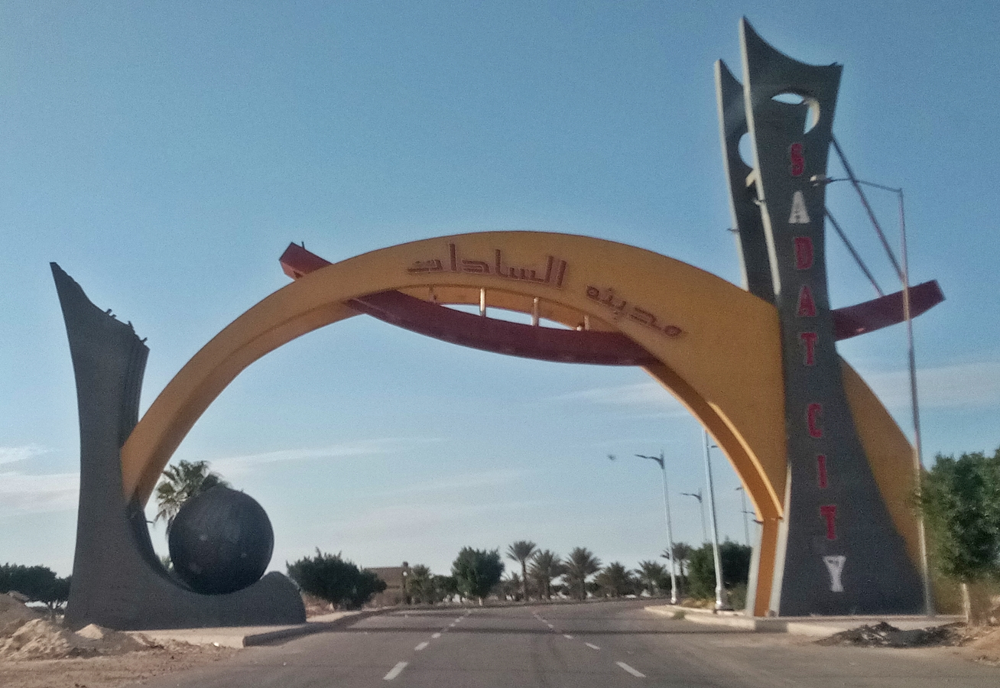

Sadat City entrance
Photo by Dr. Faris El-Gwely (Faris knight). Original photograph: SadatCity02.jpg.

Licensed under Creative Commons Attribution-ShareAlike 4.0 International. The downloaded photograph is unchanged; the interface may crop it to fit a card.
